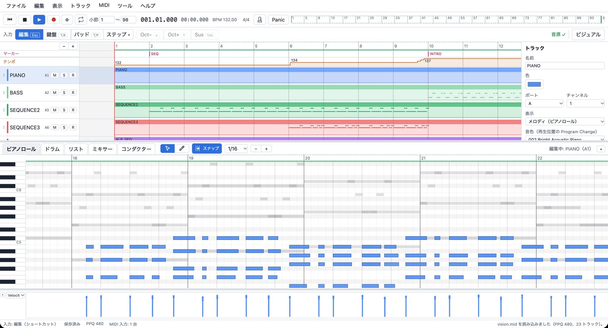

Edit like a DAW
Tracks and clips, a piano roll, Velocity / CC / Pitch Bend lanes. Quantize (strength and swing), humanize, bulk velocity edits.
A sequencer built for MIDI, running in your web browser.
Open in your browserNothing to install. Your songs and the sound bank stay inside the browser; nothing is sent anywhere. New to sequencing? Read Getting started; every operation is listed in the help. The app's language can be switched between Japanese and English in the View menu.

Watch the song as it plays: a Recomposer-style event list, a piano roll of every track, or one keyboard per track.
Tracks and clips, a piano roll, Velocity / CC / Pitch Bend lanes. Quantize (strength and swing), humanize, bulk velocity edits.
A Recomposer-style list: enter MEAS / STEP / NOTE / ST / GT / VEL from the PC keyboard. ♩=48 display is supported.
Play with the PC's letter keys or a MIDI keyboard. Real-time recording and step input. Everything works without a numeric keypad.
Visual mode shows the performance as a scrolling event list, an all-tracks piano roll or keyboards, with a choice of color schemes.
Import and export SMF. GS SysEx and unknown events are kept, never dropped. Export to WAV as well.
Sound comes from a SoundFont (GeneralUser GS by default) through Web Audio. Save to the browser or to a file. Nothing goes to a server.
This software is under development. GS SysEx is kept and editable, but the patches and effects of a real Roland SC-55 / SC-88Pro are not reproduced.